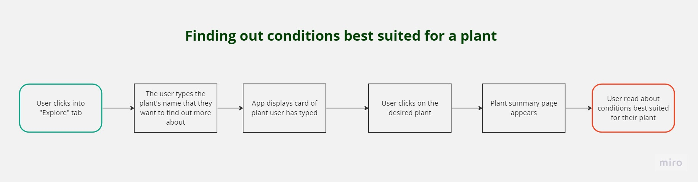
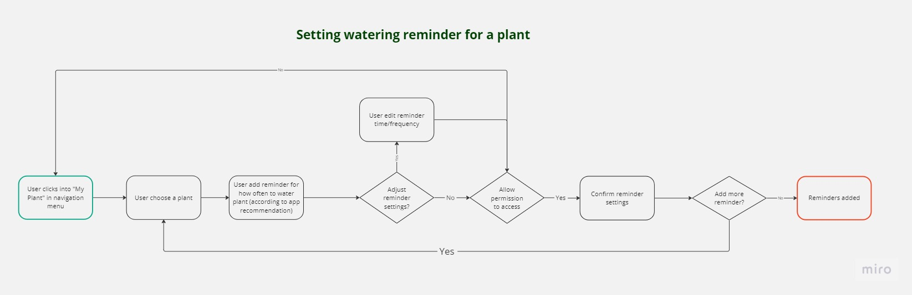

Ideate
After defining our user persona and problem statement, it was time to generate ideas for our plant care mobile app.
Our first step was to perform a competitor analysis of similar apps on the market. This gave us an inspiration for our eventual designs, whilst also alowing us to better understand the current market landscape and potential gaps we could fill.
Our first step was to perform a competitor analysis of similar apps on the market. This gave us an inspiration for our eventual designs, whilst also alowing us to better understand the current market landscape and potential gaps we could fill.
After completing our competitor analysis, we realised that the market was already quite saturated with similar concepts of a plant-care app.
Given our limited time-frame, rather than pivoting to a different idea or concept, we decided to focus on designing the key features users would need really well, whilst trying to improve on some of the weaknesses we noticed in other apps on the market.
Finally, we constructed user flows for the main features we planned to design.


